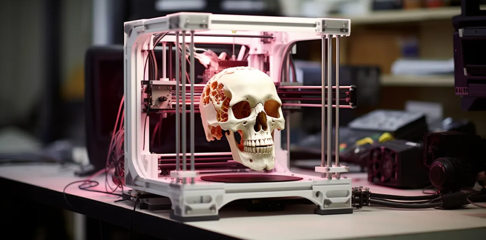

{3D Print}
La impresión 3D es un proceso que crea objetos físicos a partir de modelos digitales, depositando capas de material como plástico o metal de forma precisa. Es utilizada en diversas industrias para prototipos, fabricación de piezas personalizadas y productos complejos, ahorrando tiempo y costos.

{Techniques}
-
Las técnicas varian dependiendo de la calidad y objetivo que tengas en mente para tu escaneo. A continuación, presentamos las técnicas más populares:
{Work Flow}
-
Como parte de la tarea, muestro un video donde ejemplifico y expongo los pasos para escanear un objeto desde el mismo celular.
{Evidences}
-
Aquí, un ejemplo propio del escaneo de un objeto en 3D.